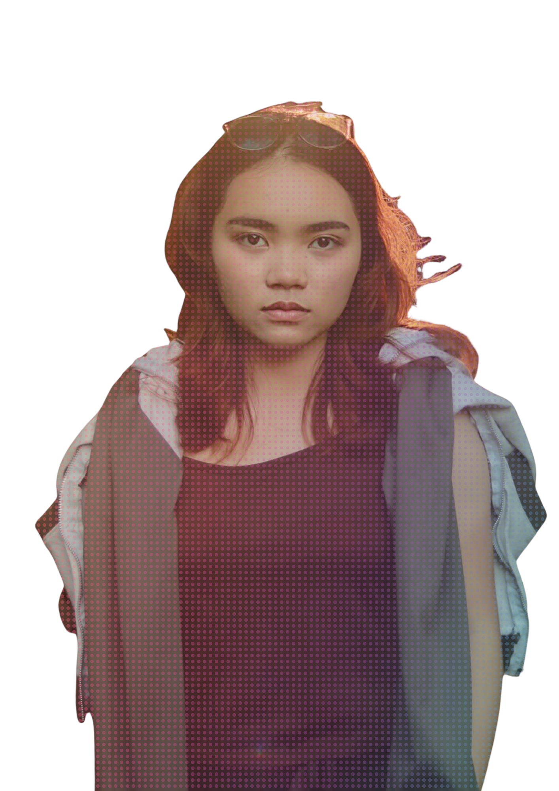
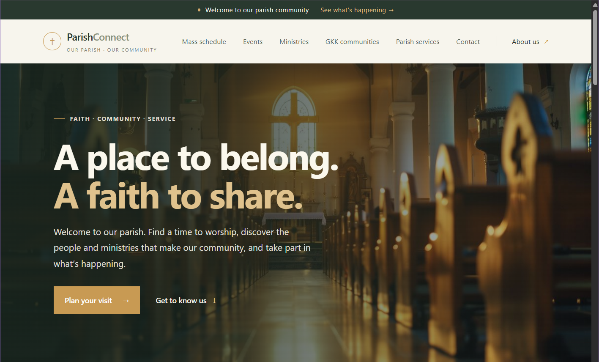
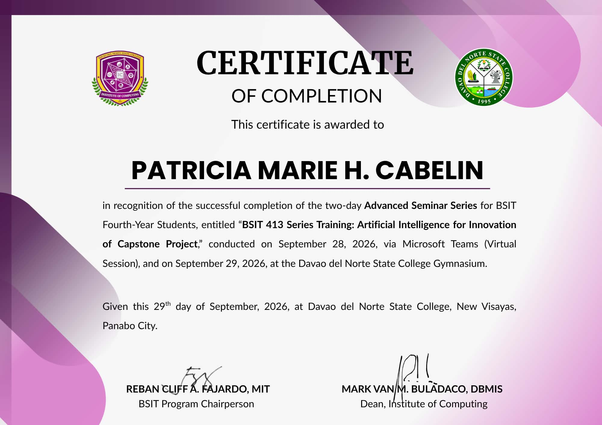

Systems & development
- Systems analysis
- Requirements gathering
- HTML · CSS · JavaScript
- React · Laravel
- Tailwind CSS
FOURTH-YEAR BSIT STUDENT
Davao del Norte State College BSIT 4B
Interested in understanding systems, researching needs, and shaping useful, clear digital experiences.

01 / About me
I’m a fourth-year BSIT student at Davao del Norte State College, with interests in systems analysis, research, technical writing, UI/UX design, and collaboration.
My STEM education, where I graduated with Honors, helped build my interest in research and writing, including journalism. I enjoy understanding systems, organizing information, and communicating ideas clearly.
I’m continuing to build practical technical skills while looking for ways to contribute to useful and innovative technology solutions.
02 / Capabilities
Skills developed through coursework, research, creative work, and collaboration.
03 / Selected work
A selection of academic software, community platforms, and film projects.
A collaborative study app for creating and organizing decks, making flashcards, and reviewing study material.
Team Leader · Main Developer
View source on GitHub
A parish and GKK information platform for Mass schedules, events, ministries, communities, and parish services.
Ongoing web project
View source on GitHub
Contributed to a web-based system for browsing room options, checking availability, and managing reservations.
Project team member
View project source
A collaborative horror short film about a haunted mirror and the family affected by it.
Director · Scriptwriter · Supporting Actress
Watch the film
A documentary on globalization’s effects on local farmers and market vendors, and the traditions and community ties at risk.
Director · Video Editor · Scriptwriter · Narrator
Watch the documentary04 / Experience
Roles and contributions alongside my Information Technology studies.
System Analyst Secretary
Took on group leadership roles throughout elementary and senior high school.
05 / Education
Academic foundations and continued learning.
Bachelor of Science in Information Technology
Graduated with Honors
06 / Certificates
Selected completed courses and training.
 CCNA: Introduction to NetworksDavao del Norte State College · Cisco Networking Academy · 2025
CCNA: Introduction to NetworksDavao del Norte State College · Cisco Networking Academy · 2025
 Ignite PhilippinesWadhwani Global Entrepreneur · 42 hours · June 14, 2026
Ignite PhilippinesWadhwani Global Entrepreneur · 42 hours · June 14, 2026

BSIT 413 Series Training: Artificial Intelligence for Innovation of Capstone ProjectAdvanced Seminar Series for BSIT fourth-year students · September 28–29, 202607 / Contact
Feel free to reach out about learning, collaboration, or opportunities in IT.
cabelin.patriciamarie@dnsc.edu.ph